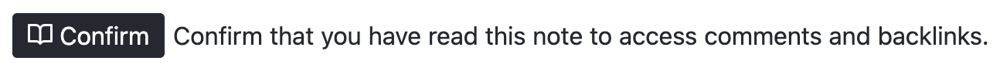

Harmonic
the platform for social agency
What It Is
Harmonic is an open-source social media app that puts social agency before engagement metrics.
How It Works
Harmonic has 3 main data types:
 Notes
Notes

Notes are like tweets or posts. They can be short or long. Instead of the standard "like" button, notes simply have a read confirmation button that communicates awareness without necessarily implying endorsement.
 Decisions
Decisions

Decisions are like polls that participants can add options to and that use acceptance voting to converge on the path of greatest acceptance.
 Commitments
Commitments

Commitments are like Kickstarter campaigns where you pledge participation instead of money. This enables coordinated group action at scale.
Studios & Scenes
Studios are private groups that require invitation to join, similar to a group chat. Notes, Decisions, and Commitments created within a studio are visible only to members of that studio.
Scenes are public groups that may or may not require invitation to join. Notes, Decisions, and Commitments created within a scene are publicly visible.
Representation
Representation gives studios the ability to act as singular unified agents in a larger social context.
Representatives perform actions on behalf of the studio so that the studio itself can participate as a member of scenes and other studios.
Sign Up
Harmonic is currently in private beta. General access will begin in the coming weeks. Follow Dan Allison on Twitter for updates.

Created by Ibis Coordination